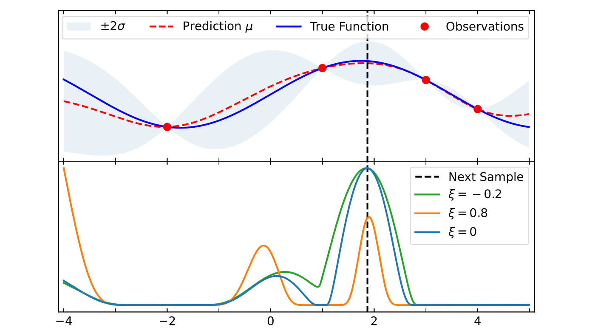

Blog
-

Unravelling the Secrets of Sydney's Most Elusive Beach: How to predict the appearance of MacKenzies Bay's Beach using Satellite Imagery
I predict the appearance of an "impossible to predict" beach with a 70% accuracy. I used image classification on satellite images to map the shoreline of a beach and combined it with wave data for a time series analysis. #RemoteSensing #ImageClassification #TimeSeriesAnalysis
-

Bin Chicken does Euro Summer: Species Distribution Modelling for the Sacred Ibis in Italy
I used Species Distribution Modelling to predict the suitable habitat for the Sacred Ibis in Italy. K-Means was used to derive pseudo-absence data and Random Forest was used to get the habitat suitability map. #RemoteSensing #GeospatialAnalysis #SpeciesDistributionModelling #MachineLearning #Ecology
-
Playing with Fire Part 2: Using Satellite images and Cellular Automata to predict Wildfire Spread
I built a simulation to model wildfire spread using NDVI, slope and wind data. The result was able to accurately match the actual spatial fire pattern. #RemoteSensing #GeospatialAnalysis #WildfireModeling #PythonSimulation #MachineLearning
-

Playing with Fire Part 1: Using Remote Sensing to calculate Wildfire damages
I used satellite data from Sentinel-2 to calculate the burnt area of the largest wildfire of 2025 so far. #RemoteSensing #GoogleEarthEngine #Sentinel2
-

The Physics behind Drying Clothes
Can physics calculate how long it will take your clothes to dry? #Simulation #Modelling
-

How to run a Taxi Business in NYC?
I analysed historical Taxi data for New York City to derive insights and strategies to optimise profits of a taxi company. #XGBoost #Pandas #Matplotlib #geomaps
-
 Bayesian Optimisiation for Likelihood Sampling
Implementation of Bayesian Optimisation with Gaussian Process Regression to greatly speed up evaluation of likelihood. #Bayesian Statistics #Optimisation #High Performanc Computing #Fortran